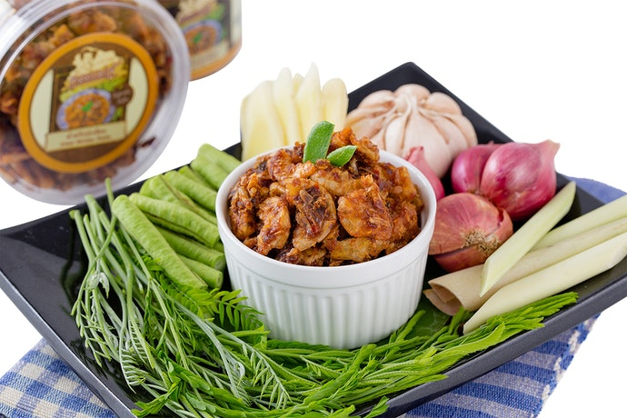

น้ำพริกกุ้งเสียบ

น้ำพริกถือเป็นอาหารที่หลาย ๆ คนคงจะต้องมีติดบ้านเอาไว้ เพราะรับประทานกับอาหารได้หลากหลาย หรือจะรับประทานเปล่า ๆ กับข้าวสวยก็อร่อยได้ง่าย ๆ ซึ่งน้ำพริกที่เป็นของเด็ดขึ้นชื่อประจำจังหวัดภูเก็ตก็คือ "น้ำพริกกุ้งเสียบ" นั่นเองค่ะ จุดเด่นก็คือรสชาติเข้มข้น เผ็ดเปรี้ยวกลมกล่อมตามแบบฉบับอาหารใต้ พร้อมด้วยกุ้งกรอบ ๆ ตัวใหญ่ อร่อยได้เนื้อ จึงถือเป็นของฝากยอดฮิตที่พลาดไม่ได้เมื่อไปเยือนภูเก็ต โดยน้ำพริกกุ้งเสียบจะมีหลายสูตรแตกต่างกันไปตามร้านค้าที่จำหน่าย โดยอาจมีทั้งแบบเพิ่มเม็ดมะม่วงหิมพานต์เคี้ยวเพลิน ๆ หรือสูตรเข้มข้นสำหรับคนชอบทานรสจัด นอกจากนี้ ยังมีแบบตำสดให้เลือกซื้ออีกด้วย